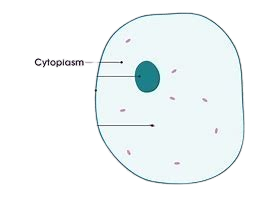

NÚCLEO
"O núcleo é uma organela que atua controlando as funções celulares e destaca-se por ser envolvido por duas membranas que recebem o nome de envelope nuclear. O núcleo é considerado a organela mais proeminente da célula eucarionte e apresenta em seu interior os cromossomos e o nucléolo. Essa organela contém a maior parte do material genético da célula, mas não é o único local onde este material pode ser encontrado. Mitocôndrias e plastídios também possuem seu próprio DNA.
O nucléolo está envolvido na produção dos ribossomos, estruturas relacionadas com a produção de proteínas. É no nucléolo que o RNA ribossomal se unirá às proteínas importadas do citoplasma e originará as subunidades ribossomais. Cada subunidade sairá do núcleo por meio dos poros presentes no envelope nuclear e apenas no citoplasma se unirão.

MEMBRANA PLASMÁTICA
A membrana plasmática é uma estrutura celular fina que delimita a célula, sendo responsável pela saída e entrada de sustâncias. Assim, ela tem a função de proteger as estruturas celulares internas.
É uma estrutura semipermeável, ou seja, é seletivo sobre as substâncias que entram e saem. Responsável pelo transporte e seleção de substâncias que entram e saem da célula. Por isso, ela é de extrema importância para o metabolismo celular.

CITOPLASMA
O citoplasma é todo o conteúdo celular localizado fora do núcleo. Nele está contida uma variada quantidade de organelas membranosas, as quais desenvolvem variadas funções. A parte do citoplasma localizada entre as organelas recebe o nome de citosol ou matriz citoplasmática, no qual as importantes reações químicas acontecem.

RIBOSSOMO
A função dos ribossomos é auxiliar na produção e na síntese das proteínas nas células. Além dele, participam desse processo as moléculas de DNA e RNA. Os ribossomos reúnem diversos aminoácidos durante a síntese proteica através de uma ligação química chamada de ligação peptídica. Eles estão presentes em grande parte no citoplasma (ribossomos livres). No entanto, podem ser encontrados nas mitocôndrias, nos cloroplastos e no retículo endoplasmático.
RETICULO ENDOPLASMÁTICO LISO
O Retículo endoplasmático liso não possui ribossomos ligados à membrana, por este motivo recebe o nome de liso ou agranular.
A sua função é, basicamente, participar da produção lipídios (gordura), especialmente os fosfolipídios, que compõem a membrana plasmática.No entanto, dependendo do tipo do celular, o REL terá funções diferentes. Como, por exemplo, produzir hormônios esteroides, a partir do colesterol, ou regular os níveis de cálcio do citoplasma de células do tecido muscular estriado.

RETICULO ENDOPLASMÁTICO RUGOSO
O retículo endoplasmático, quando associado aos ribossomos, adquire uma aparência áspera, motivo pelo qual é chamado de rugoso ou granular.Está localizado no citoplasma, próximo ao núcleo, sendo a sua membrana uma continuação da membrana nuclear externa.
A conexão do RER com o núcleo da célula faz com que a síntese de proteínas seja mais eficiente. Os sinais enviados são rapidamente recebidos pelo núcleo para iniciar o processo de transcrição do DNA.Na presença de proteínas inativas, ocorre a facilitação do envio de sinais diretos para o melhoramento do processo. Contudo, na impossibilidade de ajuste, a célula iniciará a apoptose, ou seja, a morte celular programada.

COMPLEXO DE GOLGI
Também chamado complexo de Golgi ou ainda complexo golgiense, é composto de discos achatados empilhados, formando bolsas membranosas.
Suas funções são modificar, armazenar e exportar proteínas sintetizadas no RER. Algumas dessas proteínas são glicosiladas, ou seja, sofrem reação de adição de um açúcar no RE e no golgi o processo é completado.
Além disso, o aparelho de Golgi produz vesículas que brotam e se soltam originando os lisossomos primários. No momento em que esses lisossomos primários se fundem aos endossomas formam vacúolos digestórios ou lisossomos secundários.

LISOSSOMO
Os lisossomos são envolvidos apenas pela bicamada lipídica e no seu interior há enzimas digestivas. Sua função é digerir moléculas orgânicas como lipídios, carboidratos, proteínas e ácidos nucleicos (DNA e RNA).
No interior dos lisossomos existem enzimas digestivas. As enzimas favorecem a aceleração da quebra de moléculas, transformando-as em pequenos porções, o que conhecemos como digestão. O interior dos lisossomos é ácido, pois é esse, o ambiente perfeito para ação dessas enzimas digestivas.
As moléculas a serem digeridas são englobadas por endocitose e entram na célula envolvidas em vesículas formadas a partir da membrana chamados endossomas. Depois fundem-se com os lisossomos primários e são quebradas, originando partes menores, como os ácidos graxos. Essas moléculas pequenas saem do lisossomo e são aproveitadas no citosol da célula.
CENTRIOLO
Os centríolos são organelas com estrutura cilíndrica encontradas nas células eucarióticas. Eles participam da divisão celular pela capacidade de duplicação quando ocorre a mitose e meiose, migrando para os polos da célula após a duplicação. Essas organelas não membranosas também participam da formação dos cílios e flagelos.
MITOCONDRIA
São organelas compostas por membrana dupla, sendo uma externa e uma interna que apresenta muitas dobras, as chamadas cristas mitocondriais.
As mitocôndrias são organelas especiais, com capacidade de se reproduzir, uma vez que contem moléculas de DNA circular, tal como as bactérias.Sua função é realizar a respiração celular, que produz a maior parte da energia utilizada nas funções vitais. A primeira etapa acontece no citosol da célula e as duas últimas nas suas membranas internas
PEROXISSOMO
Os peroxissomos são pequenas organelas membranosas, que contêm no seu interior enzimas oxidases, e estão presentes em células animais e vegetais.
A principal função é oxidar os ácidos graxos para a síntese de colesterol e também para serem usados como matéria-prima na respiração celular.Encontram-se, majoritariamente, nas células dos rins e do fígado. Lá, neutralizam os efeitos tóxicos de substâncias consumidas como, por exemplo, o álcool. Além disso, participam da produção de sais biliares.Nas reações de oxidação é produzido o peróxido de hidrogênio e por isso o nome da organela.